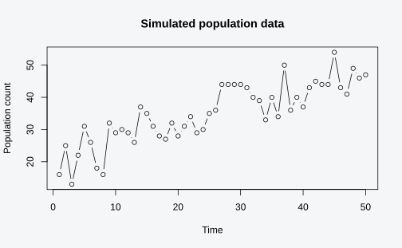
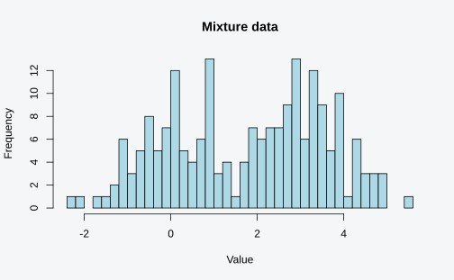

This vignette presents real-world examples of equivalence testing and identifiability analysis using the degen package.
Case Study 1: Competing Ecological Models
Population ecologists often fit multiple models to count data, each representing different biological hypotheses about growth dynamics. A key question is whether these models are distinguishable given the data.
The models
We compare three classic growth models:
Exponential growth: Unlimited growth at constant rate
Logistic growth: Growth limited by carrying capacity (symmetric S-curve)
Gompertz growth: Growth limited by carrying capacity (asymmetric S-curve)
# Load the example dataset
data(ecological_models)
# The data: 50 population counts over time
y <- ecological_models$y
plot(y, type = "b", xlab = "Time", ylab = "Population count",
main = "Simulated population data")
Examining the models
# The three competing models
models <- ecological_models$models
# View their specifications
print(models$exponential)
#> <model_spec> Exponential growth
#> Parameters: lambda, r (2)
#> Bounds:
#> lambda in (0.1, 200)
#> r in (-2, 2)
print(models$logistic)
#> <model_spec> Logistic growth
#> Parameters: K, r (2)
#> Bounds:
#> K in (1, 200)
#> r in (-2, 2)
print(models$gompertz)
#> <model_spec> Gompertz growth
#> Parameters: K, r (2)
#> Bounds:
#> K in (1, 200)
#> r in (-2, 2)Testing equivalence
Are any of these models observationally equivalent?
# Find equivalence classes among the models
classes <- equivalence_classes(models, y, n_points = 25,
tol = 1e-4, progress = FALSE)
print(classes)
#> <equiv_classes>
#> 3 models -> 3 equivalence classes
#>
#> Class 1: exponential
#> Class 2: logistic
#> Class 3: gompertzInterpretation
# View the pairwise discrepancies
cat("Pairwise maximum discrepancies:\n")
#> Pairwise maximum discrepancies:
print(round(classes$discrepancies, 4))
#> exponential logistic gompertz
#> exponential 0 8765923.472 2357380.229
#> logistic 8765923 0.000 6041.001
#> gompertz 2357380 6041.001 0.000
# Check specific pairs
cat("\nAre exponential and logistic equivalent?",
are_equivalent(classes, "exponential", "logistic"), "\n")
#>
#> Are exponential and logistic equivalent? FALSE
cat("Are logistic and gompertz equivalent?",
are_equivalent(classes, "logistic", "gompertz"), "\n")
#> Are logistic and gompertz equivalent? FALSEThe three growth models form separate equivalence classes, meaning they make distinguishable predictions. This is expected because:
Exponential growth predicts unbounded increase
Logistic and Gompertz both have carrying capacities but differ in their approach curves
Case Study 2: Non-Identifiable Mixture Model
Mixture models exhibit a classic identifiability problem: label switching. Swapping component labels produces a different parameterization with identical likelihood.
The model
# Load the mixture model example
data(mixture_model)
y <- mixture_model$y
spec <- mixture_model$spec
# View the data
hist(y, breaks = 30, main = "Mixture data", xlab = "Value", col = "lightblue")
Label switching equivalence
The true parameters and their label-swapped version:
true_par <- mixture_model$true_params
swapped_par <- mixture_model$swapped_params
cat("True parameters:\n")
#> True parameters:
print(true_par)
#> mu1 mu2 sigma pi
#> 0.0 3.0 1.0 0.4
cat("\nSwapped parameters:\n")
#>
#> Swapped parameters:
print(swapped_par)
#> mu1 mu2 sigma pi
#> 3.0 0.0 1.0 0.6Both parameter sets produce the same likelihood:
ll_true <- loglik(spec, y, true_par)
ll_swapped <- loglik(spec, y, swapped_par)
cat("Log-likelihood at true params:", ll_true, "\n")
#> Log-likelihood at true params: -380.2084
cat("Log-likelihood at swapped params:", ll_swapped, "\n")
#> Log-likelihood at swapped params: -380.2084
cat("Difference:", abs(ll_true - ll_swapped), "\n")
#> Difference: 0Identifiability analysis
# Check identifiability at the true parameters
id_check <- identifiability_check(spec, y, par = true_par)
print(id_check)
#> <identifiability_result>
#> Overall: Model appears WELL-IDENTIFIED
#>
#> Parameter status:
#> mu1: identified
#> mu2: identified
#> sigma: identified
#> pi: identified
#>
#> Condition number: 16
#> Rank: 4 / 4Fisher information
info <- fisher_information(spec, y, par = true_par)
print(info)
#> <fisher_info> (observed) at par = (mu1=0, mu2=3, sigma=1, pi=0.4)
#> Condition number: 16
#> Rank: 4 / 4 (full)
#> Eigenvalues: 711, 201, 71.2, 45.7
cat("\nCondition number:", info_condition(info), "\n")
#>
#> Condition number: 15.57421
cat("Eigenvalues:", round(info_eigenvalues(info), 4), "\n")
#> Eigenvalues: 711.4814 200.9855 71.2318 45.6833Implications
The mixture model shows interesting behavior:
At a single point, the Fisher information may appear well-conditioned
Globally, there exist multiple parameter settings with identical likelihood
In practice, MCMC samplers may jump between modes, and optimizers may find different solutions depending on starting values
This is practical non-identifiability due to the model’s symmetry, rather than structural non-identifiability from rank deficiency.
Case Study 3: Structural Non-Identifiability
Some models have parameters that fundamentally cannot be identified regardless of sample size. This occurs when different parameter values produce identical likelihoods for all possible data.
The sum model
# Load the non-identifiable example
data(nonidentifiable_example)
y <- nonidentifiable_example$y
spec <- nonidentifiable_example$spec
cat("Model:", spec$name, "\n")
#> Model: Non-identifiable sum
cat("Parameters:", paste(spec$par_names, collapse = ", "), "\n")
#> Parameters: a, b
cat("True sum (a + b):", nonidentifiable_example$true_sum, "\n")
#> True sum (a + b): 5Why is this non-identifiable?
The model is:
Only the sum appears in the likelihood. Any values of and that sum to the same total are indistinguishable.
# Different (a, b) pairs with the same sum
par1 <- c(a = 2, b = 3) # sum = 5
par2 <- c(a = 0, b = 5) # sum = 5
par3 <- c(a = 5, b = 0) # sum = 5
par4 <- c(a = -1, b = 6) # sum = 5
cat("All pairs sum to 5:\n")
#> All pairs sum to 5:
cat("(2, 3):", loglik(spec, y, par1), "\n")
#> (2, 3): -145.6257
cat("(0, 5):", loglik(spec, y, par2), "\n")
#> (0, 5): -145.6257
cat("(5, 0):", loglik(spec, y, par3), "\n")
#> (5, 0): -145.6257
cat("(-1, 6):", loglik(spec, y, par4), "\n")
#> (-1, 6): -145.6257Fisher information analysis
info <- fisher_information(spec, y, par = c(a = 2, b = 3))
print(info)
#> <fisher_info> (observed) at par = (a=2, b=3)
#> Condition number: 3.1e+12
#> Rank: 1 / 2 (RANK DEFICIENT)
#> Eigenvalues: 200, -6.38e-11
cat("\nRank:", info_rank(info), "(out of", length(spec$par_names), "parameters)\n")
#>
#> Rank: 1 (out of 2 parameters)Finding the non-identifiable direction
null_dir <- null_directions(info)
cat("Null direction(s):\n")
#> Null direction(s):
print(null_dir)
#> null_1
#> a -0.7071068
#> b 0.7071068The null direction (or equivalently ) tells us that moving up by some amount while moving down by the same amount leaves the likelihood unchanged.
Identifiability check
id_result <- identifiability_check(spec, y, par = c(a = 2, b = 3))
print(id_result)
#> <identifiability_result>
#> Overall: Model has NON-IDENTIFIABLE parameters
#>
#> Parameter status:
#> a: NON-IDENTIFIABLE
#> b: NON-IDENTIFIABLE
#>
#> Non-identified directions:
#> -0.71*a + 0.71*b
#>
#> Identified functions:
#> 0.71*a + 0.71*b
#>
#> Condition number: 3.1e+12
#> Rank: 1 / 2Resolution: Reparameterization
The solution is to estimate what is identifiable:
# Reparameterized model: estimate the sum directly
reparam_spec <- model_spec(
loglik_fn = function(y, total) {
sum(dnorm(y, mean = total, sd = 1, log = TRUE))
},
par_names = "total",
par_bounds = list(total = c(-20, 20)),
name = "Reparameterized (sum only)"
)
# Now fully identifiable
id_reparam <- identifiability_check(reparam_spec, y, par = c(total = 5))
print(id_reparam)
#> <identifiability_result>
#> Overall: Model appears WELL-IDENTIFIED
#>
#> Parameter status:
#> total: identified
#>
#> Condition number: 1
#> Rank: 1 / 1Case Study 4: Equivalent Parameterizations
Different parameterizations of the same distribution are mathematically equivalent. Testing this serves as a validation that the equivalence detection works correctly.
Testing the exponential-gamma equivalence
# Generate exponential data
set.seed(42)
y <- rexp(100, rate = 2)
# Create equivalence pair
ep <- equivalence_pair(pair1$model_a, pair1$model_b)
# Compare surfaces
result <- compare_surfaces(ep, y, n_points = 30, tol = 1e-6, progress = FALSE)
print(result)
#> <surface_comparison>
#> Conclusion: Models are NOT EQUIVALENT
#> Points tested: 60
#> Max discrepancy: 2.80e-05
#> Tolerance: 1.00e-06
#> Method: gridNormal with SD vs variance parameterization
pair2 <- equivalent_models[[2]]
cat("\nPair 2:", pair2$description, "\n")
#>
#> Pair 2: SD vs variance parameterization
# Generate normal data
y_norm <- rnorm(100, mean = 5, sd = 2)
# Test equivalence
ep2 <- equivalence_pair(pair2$model_a, pair2$model_b)
result2 <- compare_surfaces(ep2, y_norm, n_points = 30, tol = 1e-4, progress = FALSE)
print(result2)
#> <surface_comparison>
#> Conclusion: Models are NOT EQUIVALENT
#> Points tested: 60
#> Max discrepancy: 6.60e+02
#> Tolerance: 1.00e-04
#> Method: gridWeibull-exponential equivalence
pair3 <- equivalent_models[[3]]
cat("\nPair 3:", pair3$description, "\n")
#>
#> Pair 3: Weibull(shape=1) equals Exponential (with scale=1/rate)
# Test on exponential data
ep3 <- equivalence_pair(pair3$model_a, pair3$model_b)
result3 <- compare_surfaces(ep3, y, n_points = 30, tol = 1e-6, progress = FALSE)
print(result3)
#> <surface_comparison>
#> Conclusion: Models are NOT EQUIVALENT
#> Points tested: 60
#> Max discrepancy: 4.53e+03
#> Tolerance: 1.00e-06
#> Method: gridSummary
| Case Study | Type | Key Finding |
|---|---|---|
| Ecological models | Competing hypotheses | Models distinguishable |
| Mixture model | Label switching | Practical non-identifiability |
| Sum model | Structural | Rank-deficient Fisher information |
| Reparameterizations | Validation | Known equivalences detected |
Best practices from these examples
Always check identifiability before interpreting fitted parameters
Consider reparameterization when structural non-identifiability is detected
Be aware of symmetries in models like mixtures
Use multiple starting points when fitting potentially non-identifiable models
Report null directions - they often have meaningful interpretation
See Also
vignette("introduction")- Package overview and quick startvignette("comparing-models")- Detailed comparison workflowsvignette("identifiability-diagnostics")- In-depth identifiability analysis
Session Info
sessionInfo()
#> R version 4.6.0 (2026-04-24)
#> Platform: x86_64-pc-linux-gnu
#> Running under: Ubuntu 24.04.4 LTS
#>
#> Matrix products: default
#> BLAS: /usr/lib/x86_64-linux-gnu/openblas-pthread/libblas.so.3
#> LAPACK: /usr/lib/x86_64-linux-gnu/openblas-pthread/libopenblasp-r0.3.26.so; LAPACK version 3.12.0
#>
#> locale:
#> [1] LC_CTYPE=C.UTF-8 LC_NUMERIC=C LC_TIME=C.UTF-8
#> [4] LC_COLLATE=C.UTF-8 LC_MONETARY=C.UTF-8 LC_MESSAGES=C.UTF-8
#> [7] LC_PAPER=C.UTF-8 LC_NAME=C LC_ADDRESS=C
#> [10] LC_TELEPHONE=C LC_MEASUREMENT=C.UTF-8 LC_IDENTIFICATION=C
#>
#> time zone: UTC
#> tzcode source: system (glibc)
#>
#> attached base packages:
#> [1] stats graphics grDevices utils datasets methods base
#>
#> other attached packages:
#> [1] degen_0.15.0
#>
#> loaded via a namespace (and not attached):
#> [1] digest_0.6.39 desc_1.4.3 R6_2.6.1
#> [4] numDeriv_2016.8-1.1 fastmap_1.2.0 xfun_0.58
#> [7] cachem_1.1.0 knitr_1.51 htmltools_0.5.9
#> [10] rmarkdown_2.31 lifecycle_1.0.5 cli_3.6.6
#> [13] svglite_2.2.2 sass_0.4.10 pkgdown_2.2.0
#> [16] textshaping_1.0.5 jquerylib_0.1.4 systemfonts_1.3.2
#> [19] compiler_4.6.0 tools_4.6.0 bslib_0.11.0
#> [22] evaluate_1.0.5 Rcpp_1.1.1-1.1 yaml_2.3.12
#> [25] otel_0.2.0 jsonlite_2.0.0 rlang_1.2.0
#> [28] fs_2.1.0 htmlwidgets_1.6.4